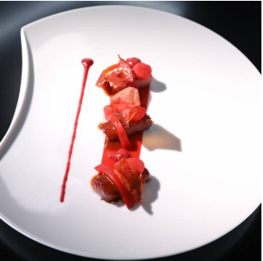

Prend un tablier et regarde la vidéo suivante !
Comme te l’a bien expliqué le chef Roger (si tu arrives à comprendre son accent!), tu as pour mission de réaliser un plat monochrome. En voici un exemple :
Avec 3 ingrédients différents minimum (sans compter les condiments) que tu trouves chez toi, crée et cuisine une entrée, un plat ou un dessert d’une seule et même couleur à la fin dans l’assiette.Toutes les couleurs sont acceptées.. Il faut que ça soit mangeable et même excellent évidemment ! Sois créatif !
Après avoir réalisé ta recette, goûte ton plat et fais le goûter à quelqu’un, si tu le peux . Mais surtout envoie une photo de ton plat avec sa jolie présentation ! Et petit + : tu peux aussi écrire la recette, chef Roger se fera un plaisir de la rajouter dans son énooorme livre de recettes étoilées !